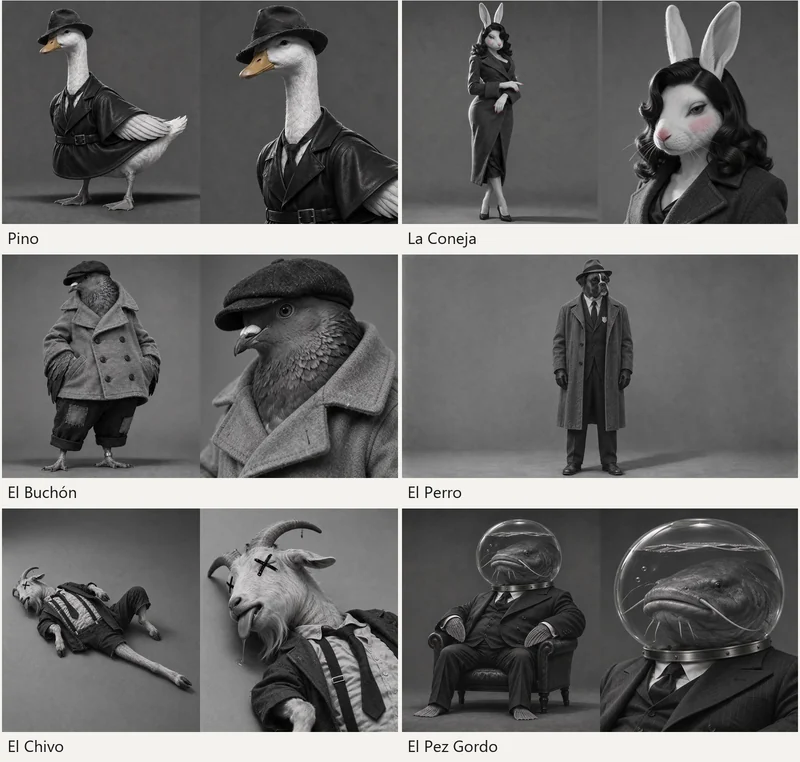
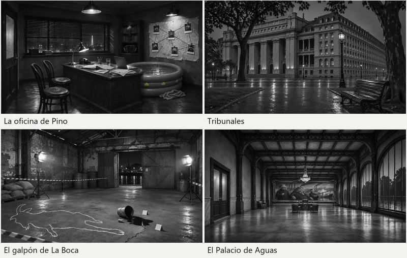
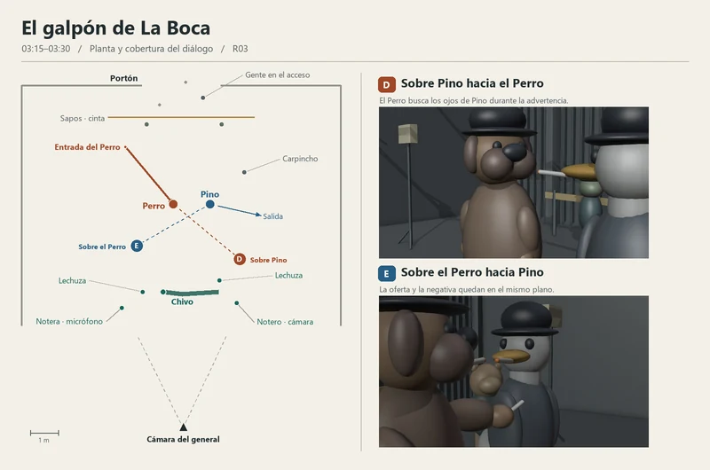
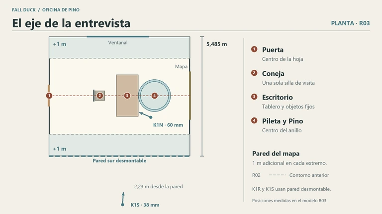
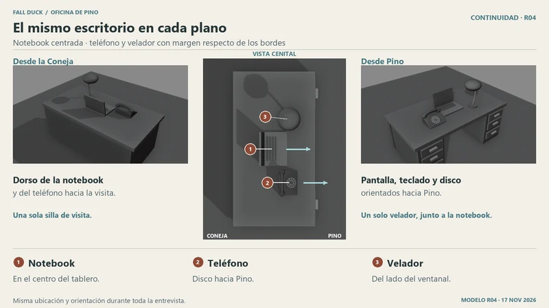
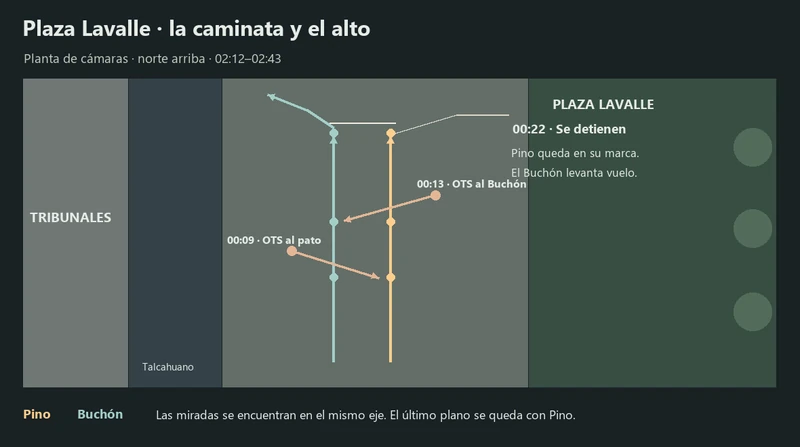
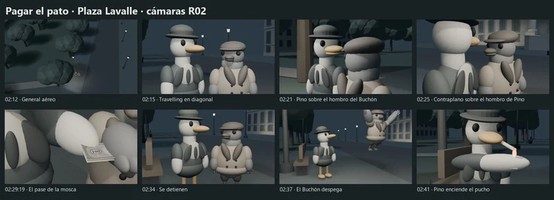
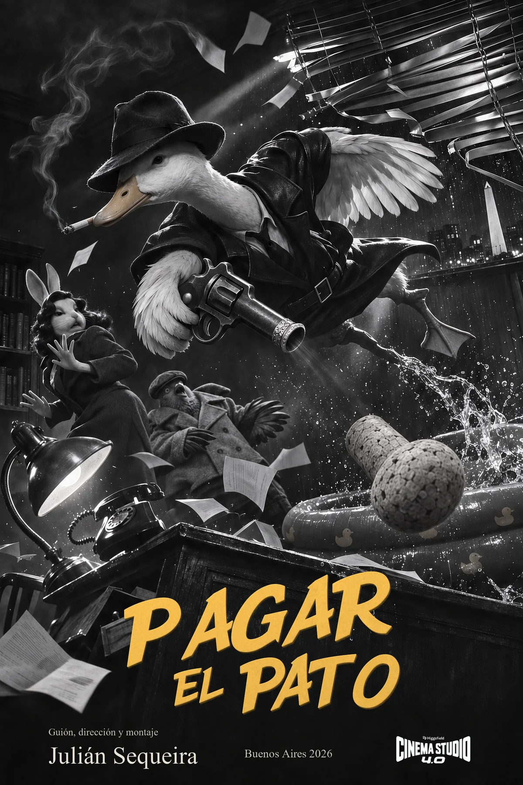

Cortometraje · Policial negro porteño
Pagar el pato
En Malos Aires, una coneja contrata al detective Pino para encontrar a su marido. Lleva tres días desaparecido. Ella paga por adelantado.
Reparto y decorados
Malos Aires


Detrás de escena · El galpón de La Boca
Cómo se filmó el ofrecimiento
El Perro le ofrece un pucho a Pino. Pino ya tiene uno encendido. Pasé de la cámara del Perro a la de Pino para que entraran la mano y la reacción en el mismo cuadro.



Detrás de escena · Puesta en 3D
Dos escenas en 3D
La oficina
La planta fija el eje entre Pino y la Coneja. Desde los dos lados del escritorio comprobé dónde quedaban el teléfono y el velador en cada contraplano.




Plaza Lavalle
Marqué dónde frenaban Pino y el Buchón. Con los dos sobrehombros probé qué se veía del otro personaje al cortar.




Afiche y ficha
Afiche y ficha técnica


Formato
Cortometraje · policial negro porteño
Rol
Guion, dirección y montaje
Origen
Buenos Aires, 2026
Estado
En posproducción
Técnica
Blender, Seedream 5.5 y Seedance 2.5
Concurso
Higgsfield Talent Contest
Guion, dirección y montaje · Julián Sequeira. Buenos Aires, 2026.
Contacto
Siguiente proyecto
Los Tigres